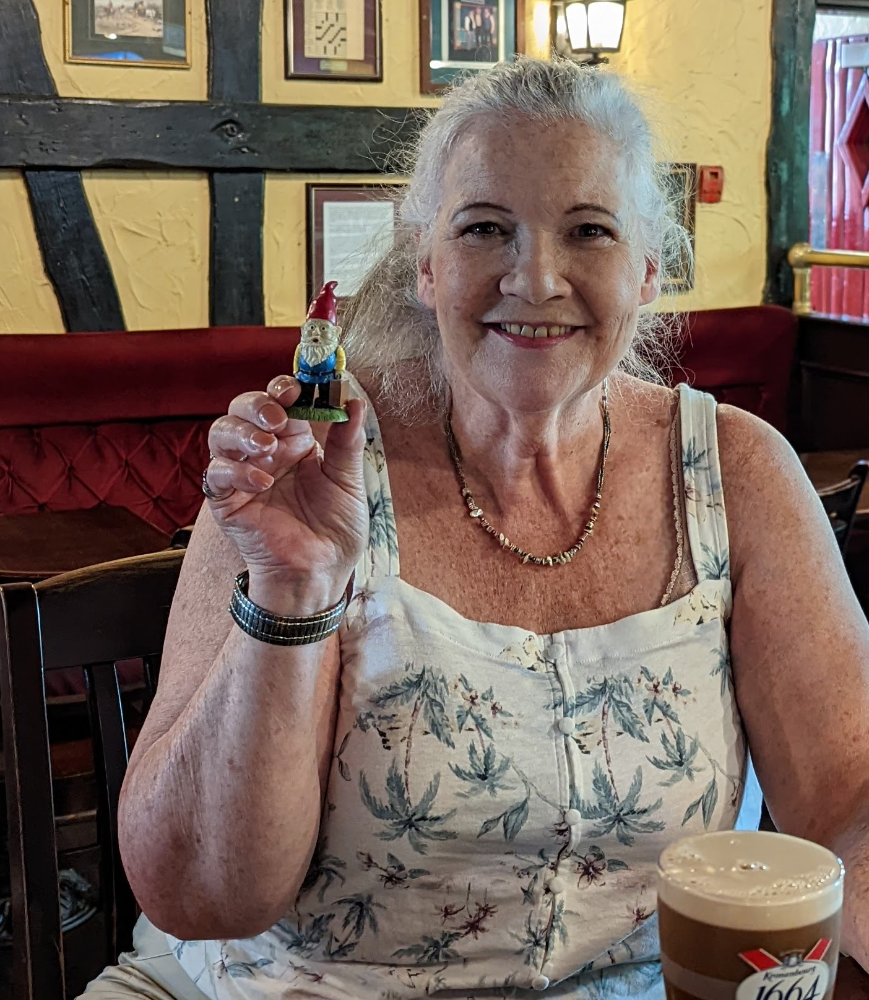
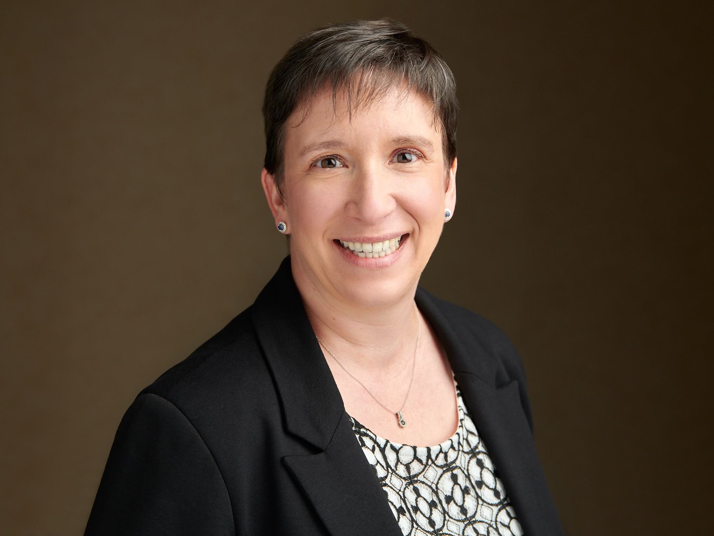
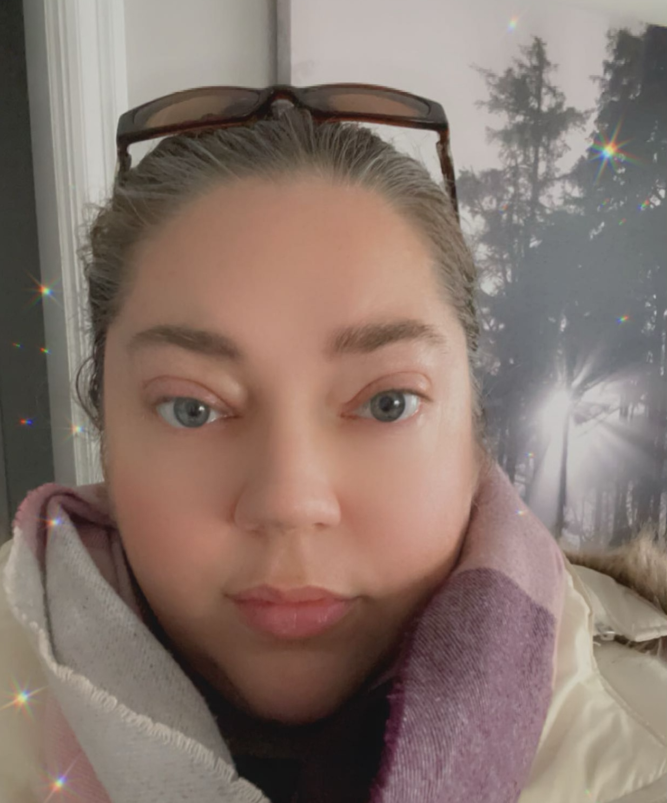
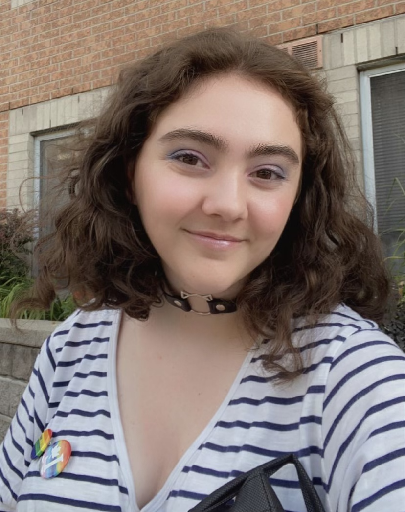
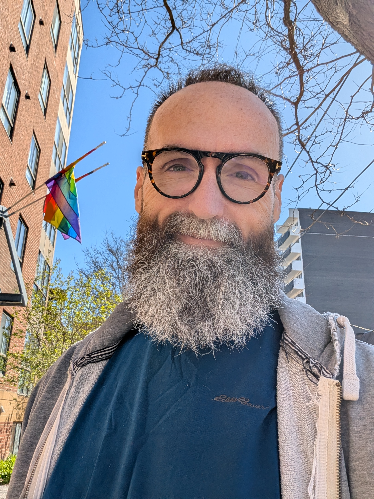
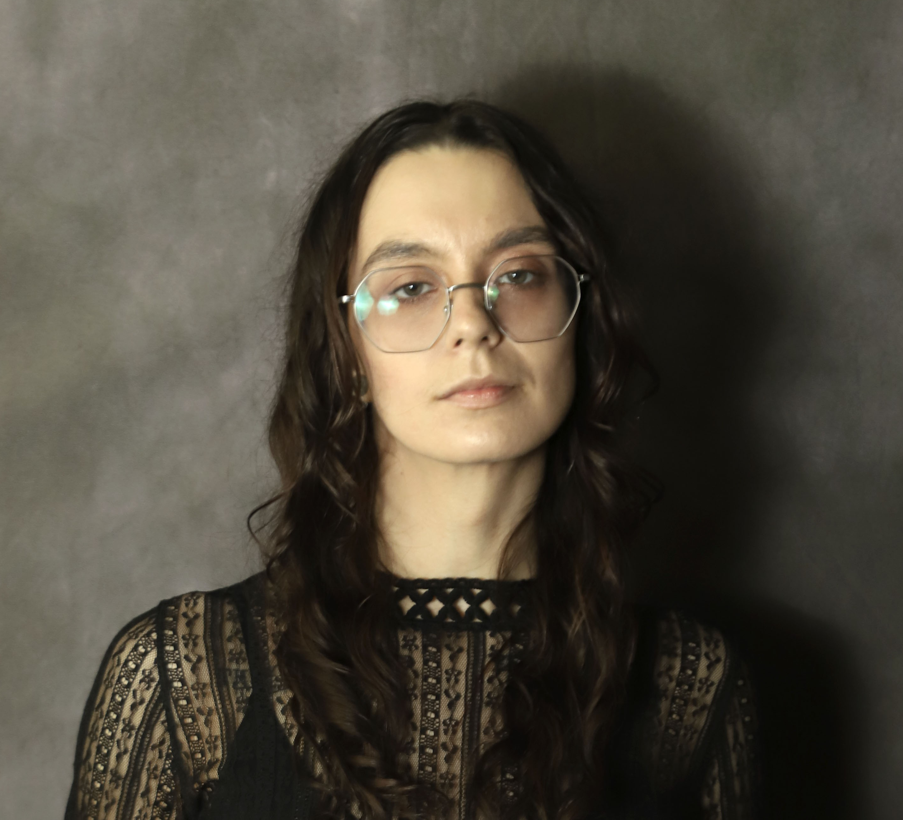

About
History West Side Pride
In April of 2023, a small group of people here in Stittsville felt that an LGBTQ2S visibility and safe space to express ourselves and our lives in the west end of Ottawa was missing. Traveling downtown in August in the heat for the big Pride event, struggling with parking issues and large crowds of people proved difficult for many and so, West Side Pride was started.
After gaining support from City Councillor Gower as well as many community groups and a few businesses in the area, we booked a local park and started drawing on 20 years of previous experience working with the boards of both Capital Pride and Halifax Pride as well as people from the high tech, artistic and political communities to put together a small afternoon festival at Alexander Groves Park.
We had three months to achieve our goal and the results were very encouraging with over 200 attendees, 40 Info Fair booths, a full afternoon of performers who worked only for tips and a very popular children's area called Kids Can that was sponsored by a local Drug store. We had 12 extra volunteers sign up - most of whom were working on their High School volunteer hours and the Stittsville Village Association supplied all our tables, chairs and water for the volunteers.
Media coverage was strong - mostly online, political support was evident in our speakers Glen Gower and Ariel Troster from City Council, MPP Joel Harden and OCDSB Dr Nili Kaplan-Myrth as well as a letter from the Prime Minister.
As we drew closer to the event date, we had a large online presence through Twitter, FB and Instagram and we did experience a small amount of backlash online from a few individual members of the extreme-right, but not as much as we expected. We met with the Ottawa Police who were fully on board to ensure our safety and they were also thrilled to be invited to participate in our afternoon's Community Info Fair.
In December 2023, West Side Pride incorporated as a not-for-profit organization and we are now preparing for our 4th annual Pride Festival on Saturday July 19th with a new start time of 11am. We have added vendors and food kiosks to our site and are again offering live entertainment, a Kids Can children's area and a wealth of community groups and businesses to share their information with you.
Our Team
Marion Steele(she/her)Chair

Marion is a retired event planner, Pride organizer, and volunteer since 1998. Marion has worked on the Boards of Ottawa Fierté Pride, Capital Pride, Halifax Pride, Fierté Canada Pride, and Interpride. In 2022 Marion started envisioning an event bringing rural community members together in an accessible, family friendly, grassroots way to celebrate the LGBTQ+ community members.
Christina Cella(she/her)Treasurer

Christina is a local pharmacist who has been involved with several non-profit organizations for over two decades. She is passionate about social justice, equity, and giving back to the community.
Pamela Steele-Vander Kooy(she/her)Social Media

Pamela is a mental health & addictions counsellor who has been working with trauma survivors & at risk community members since the late 90s. Pamela has been involved with the LGBTQIA2+ community since 1993; volunteering with The Owen Sound AIDS Committee, Bruce House, Capital Pride, & more. Pamela is a graduate from Canadore College, and she is currently completing her degree in Psychology at Carleton University.
Victoria Burman(she/they)Secretary

Victoria is a graduate student at the University of Guelph, born and raised in Ottawa. She is a queer activist dedicated to achieving equitable treatment and representation.
Mia(she/her)Stage Director
We have a vibrant stage director with a flair for curating unforgettable, high-energy Pride events. Specializing in creating inclusive and celebratory spaces, they bring a unique vision to events that blend captivating performances, powerful guest speakers, and dazzling drag artistry. With a deep commitment to 2SLGBTQIA+ visibility, they ensure each production is a bold, joyous celebration of identity, community, and self-expression, often incorporating live music to amplify the experience.
Angus Wright(they/he)Board Member

Angus (they/he) is a Certified Peer Supporter with Peer Support Canada, as well as an artist, producer, comedian, and trauma-informed wellness facilitator. They co-originated OCPride and helped preserve nearly 30 years of Pride archives through UsedOttawa.com. Through peer recovery work, community facilitation, and initiatives like the “Affirming Rainbow Peer Circle,” Angus supports mental health, addiction recovery, suicide prevention, and advocacy for 2SLGBTQIA+ and IBPOC communities.
Can Grant(they/them)Board Member

Can is a recent graduate and community advocate from Northern Ontario. They previously served as Vice Chair of Espanola High School GSA and later held leadership roles with 2QT Pride at Nipissing University. Can has developed and facilitated workshops supporting diverse communities, including LGBTQIA2S+, BIPOC, disabled, neurodivergent, and addiction recovery groups across schools, universities, counselling centres, and treatment programs. They are also a volunteer with the Ottawa Trans Library and are passionate about building connection through lived and professional experience.